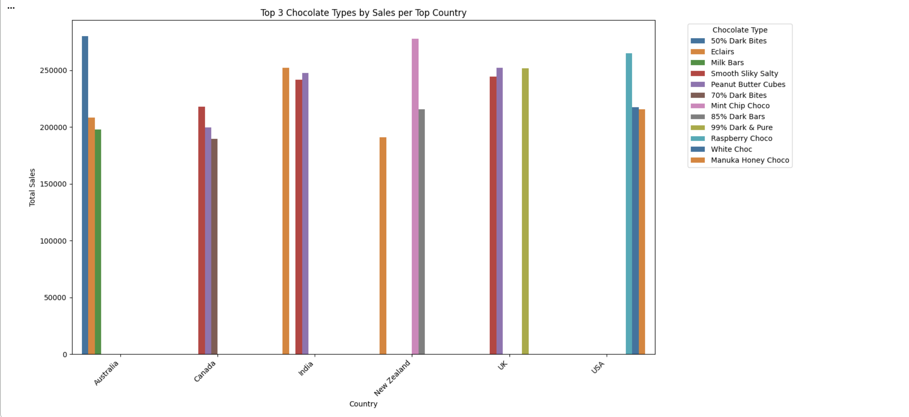

Experiment A: Portfolio Enhancement
For this lab, I created an interactive “My Hobbies Basket” section for my portfolio where visitors can drag my hobby emojis into a camping basket in the middle of the page. The idea was to make it feel like a small “game” so people can discover who I am instead of reading a boring list. My original vision was that the emojis would be floating around the basket, but since my coding knowledge is limited, I started with what Claude generated first and then kept iterating until it matched my preferences (basket centered, hobbies around it, and a “find out what my hobbies are” reveal moment).
I used Claude Haiku 4.5 in VSCode for vibe coding. I treated Claude like both a mentor and a teammate: I presented the creative direction and the vibe, and Claude helped translate that into actual HTML/CSS/JS. I also used it like a debugging partner (ex: when one emoji wasn’t showing up, it helped identify that the emoji character got corrupted and needed to be replaced).
Working with Claude Haiku 4.5
These screenshots document how I used Claude like a teammate and mentor. I started with a high-level concept, then iterated through layout decisions, a small bug fix, and an interaction tweak to match my intended “discover my hobbies” vibe.


Reflection
Even though AI generated the starting version, I still modified the result to make it feel like my design. I adjusted layout choices like centering the basket, spacing the hobby emojis around it, and adding the dashed border container, and I changed the interaction so it felt like a little reveal game instead of a basic “click to add” list. This is where AI was most helpful: it built the skeleton of my idea fast, which gave me the momentum to collaborate instead of getting stuck at zero. Once the base existed, I could focus on the creative direction and user experience choices, rather than spending all my time trying to wire the drag and drop mechanics from scratch.
At the same time, AI can be a little too confident. Sometimes the first output looked correct but did not match my mental image, so I had to be specific with follow up prompts and keep refining. It also reminded me that I still have responsibility as the builder and cannot treat AI code like magic. My role is to guide the vibe, test it like a real user, and make sure I can explain what the code is doing in my own words, even if I did not write every line from scratch.
Experiment B: Python Code Generation
For Experiment B, I picked a Chocolate Sales dataset from Kaggle because it felt like a fun, real-world dataset to practice cleaning and visualization. At first, I wanted to show top-selling countries and top-selling chocolate products, but Gemini gave me two separate charts and I caught myself thinking… wait, that doesn’t prove any correlation. So I pushed the prompt further and asked for one visualization that actually connects the variables: top-selling countries with the top 3 chocolate types for each country, so the chart tells one coherent story instead of two disconnected rankings.
Top 3 Chocolate types by Sales per Top Country



Reflection
It honestly took me around 10 minutes just to upload the CSV because it has been a while since I last used Google Colab, and I forgot some of the basic workflow (where files live, how to reference the filename, and the general rhythm of running cells). Once the dataset was loaded though, I felt much more confident. I understood the loading and cleaning steps and the grouping logic because I already had decent practice with pandas from last semester, so this experiment felt more like applying skills than learning them from zero. The main cleaning moment that mattered was converting the Amount column into numeric, because without that step, any “top-selling” analysis is not accurate
Working with Gemini was especially helpful because of the “run step-by-step” option. Instead of dumping a whole notebook at once, it let me move through the workflow in a way that felt more digestible: run a chunk, inspect the output, adjust the direction, then keep going. That made it easier to collaborate with the AI mid-session rather than treating it like a one-time code generator. When Gemini first gave me two separate charts (top-selling countries and top-selling chocolates), I could pause and rethink the story I was telling. I realized that two rankings do not automatically show a meaningful relationship, so I changed my prompt to ask for a combined view: top-selling countries with the top 3 chocolate types inside each country. That was a good reminder that the real “analysis” part is still on me — the AI can generate code fast, but I have to decide what question the chart is actually answering.